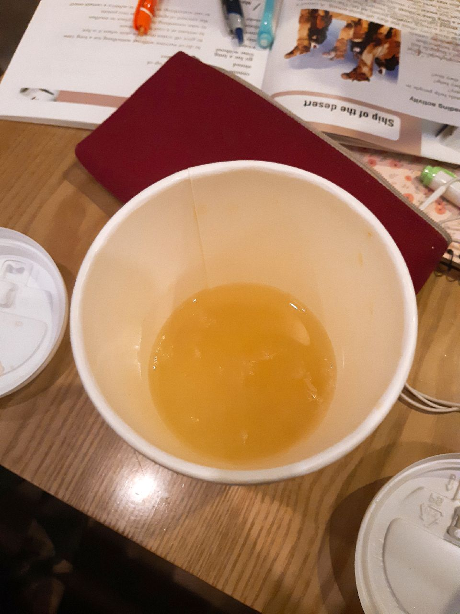
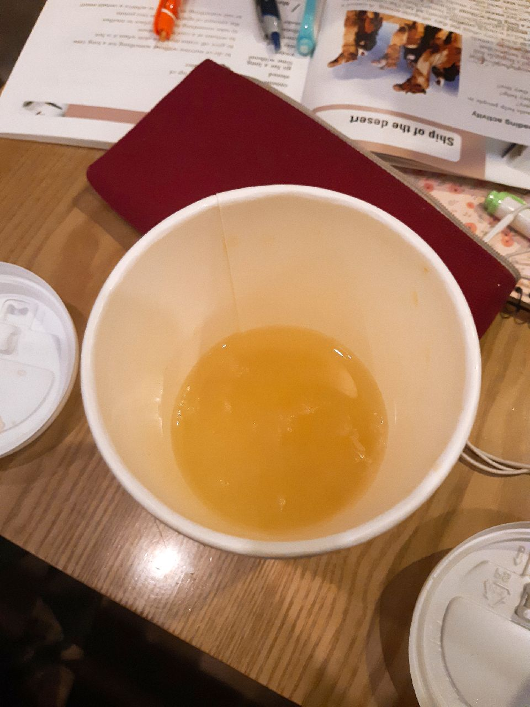

유자차
르미엘커피의 유자차다.
왜때문인진 모르겠지만 요즘 손주영은 이것만 먹는다. 유자에 니코틴이 있는게 분명하다.
르미엘의 티 종류는 모두 라지사이즈다. 나쁜놈들..
그래도 남부에서 유일한 24시카페라는점에 감사해야한다.

르미엘커피의 유자차다.
왜때문인진 모르겠지만 요즘 손주영은 이것만 먹는다. 유자에 니코틴이 있는게 분명하다.
르미엘의 티 종류는 모두 라지사이즈다. 나쁜놈들..
그래도 남부에서 유일한 24시카페라는점에 감사해야한다.
